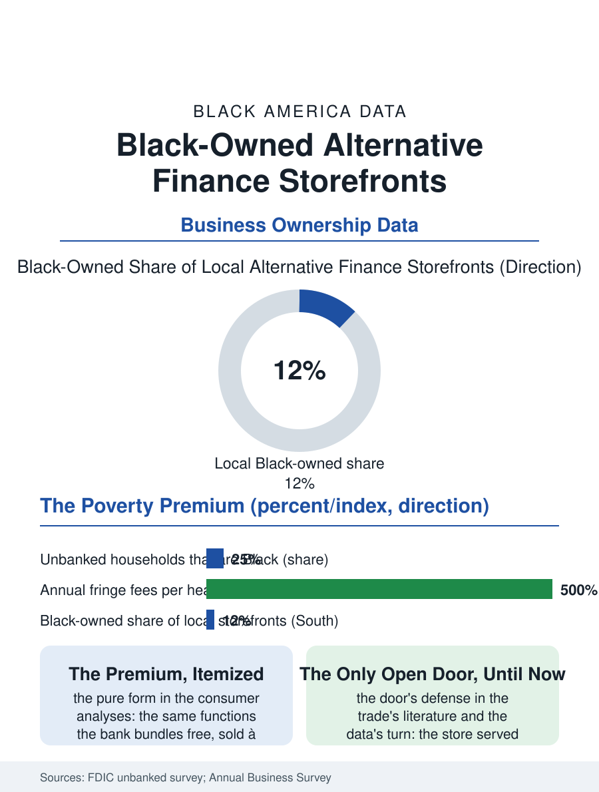

Black Business
The Only Open Door: Black-Owned Alternative Finance Storefronts
The poverty premium's retail face and the bank's rejected customers' only open door, now meeting the no-fee account's competition. The storefront file.

The check-cashing store and its kin, the payday lender, the money order window, and the prepaid card's rack, constitute the fringe banking system that serves the unbanked file's population at the highest prices in American retail finance, and its ownership, corporate chains above a local tier in which Black proprietors hold a share, is the business section's most morally argued file. This article reads the alternative finance storefront file.
The Unbanked's Price List
The market's existence is the banking file's own datum: the FDIC's survey counts the unbanked and underbanked households in the millions, disproportionately Black, their reasons in the survey's order, the minimum balance and the fees, the documentation and the distrust the ChexSystems file's exclusions built, and the storefront sells that population the bank's functions à la carte, the check converted to cash for the percentage, the bill paid for the dollar fee, the money sent for the wire's price, each transaction priced in the open and summed, in the consumer analyses, to an annual toll in the hundreds to thousands of dollars per household against the bank account's near-zero marginal cost, the poverty premium in its purest retail form. The local proprietor's position in that structure is the file's complexity: the store is frequently the neighborhood's own, its owner a known citizen whose store extends the informal credit and the cashed personal check the chain's manual forbids, its prices set by the chain's schedule and the state's fee caps where they exist, the owner's margin the franchise's or the independent's against the licensing and the bond and the robbery insurance's weight. The money order and the wire deserve their line in the storefront's defense, because for the immigrant household of the other files the store is the remittance's counter, its fees against the bank's wire desk a comparison the senders make weekly with complete information, and the store's survival in that segment is the market's own testimony about which counter treats the sender as the customer.
Regulation and the Account's Competition
The regulatory file has moved against the storefront's most expensive products in waves: the payday loan's state caps and bans, the federal ability-to-repay rule's career through the courts and the administrations, the prepaid card's fee disclosures, each intervention's outcome data showing the product's migration rather than its death, the loan reappearing as the installment and the tribal and the line of credit in the pattern of the regulated vice's hydra. The competition that disciplines the storefront in the current data is the account itself arriving in new forms: the neobanks and the bank-fintech partnerships whose no-fee, no-minimum, early-paycheck accounts were designed explicitly for the storefront's customer, their adoption in the unbanked file's recent surveys finally bending the unbanked rate downward, with the Black-owned digital banks of the current era's founding wave selling the same account with the community's name on it, the file's newest ownership tier being an app's cap table rather than a storefront's lease. The postal banking proposals and the public option's periodic bills stand in the file as the state's unanswered bid for the same customer.
The Storefront's Ledger
The alternative finance file closes on the storefront's double ledger as its community reads it: the extractor of the poverty premium and, simultaneously, the financial system's only open door in the neighborhood the bank branch left, its lights on at the hour the worker is paid, its refusal rate lower than the bank's by the design of its price, the service real and the price the argument. The local owner's defense in the trade's own literature is the door's: the store serves the customer the bank's file rejected, at the price the risk and the caps allow, and the customer's return is the market's verdict on the alternatives actually offered her, a verdict the neobank's adoption curve is now revising in the data. The census counts the storefronts within the consumer finance categories, the local tier's Black share a figure the trade directories estimate in the low double digits in the Southern markets. The file's last entry is the Friday line at the window, the paychecks converting to the weekend's cash in the neighborhood's oldest financial ritual of the wage era, shortening, in the current surveys, as the account's new forms finally arrive at the same customer, which is the competition the storefront's defenders and critics alike agree the customer deserved a generation ago.
More in Black Business
Black-Owned Businesses: Counts, Receipts, and the Representation Gap
About 161,000 Black-owned employer firms and three million solo ventures: how the Census Bureau counts Black business ownership, where firms concentrate, and the gap between population share and business share.
Black Median Net Worth: The Wealth Gap in Federal Reserve Data
The Federal Reserve puts Black median family net worth at $44,900, against $285,000 for White families — about 16 cents on the dollar. The widest gap in economic data.
Black Buying Power: The $1.8 Trillion Consumer Economy
Black buying power is estimated at about $1.8 trillion — larger than the economy of most nations. What the figure measures, who produces it, and what it buys.
Source: Federal Deposit Insurance Corporation, National Survey of Unbanked and Underbanked Households; U.S. Census Bureau, Annual Business Survey for consumer lending.